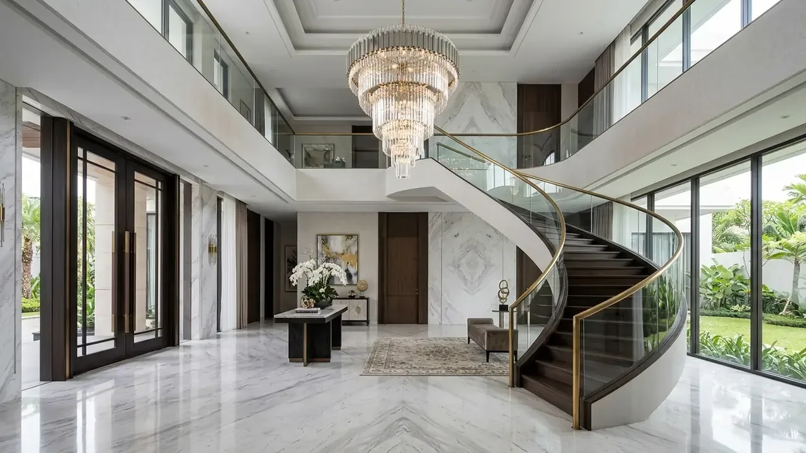

Faktor Apa Saja yang Mempengaruhi Biaya Bangun Gudang di Surabaya dan Sidoarjo?
Faktor penentu biaya mencakup kedalaman pondasi tiang pancang, bentang bebas rangka baja WF, ketebalan lantai beton, serta spesifikasi penutup dinding dan atap.
Berdasarkan laporan Jawa Timur Industrial Property Outlook 2025/2026, investasi pembangunan pergudangan modern terbagi ke dalam 4 komponen biaya utama:
- Pekerjaan Tanah dan Pondasi Dalam (25-35% Biaya Total): Karena tanah kawasan pesisir Margomulyo dan Sidoarjo memiliki lapisan lempung lunak tebal, biaya pemancangan tiang beton dan matras urukan sirtu/makadam memegang porsi anggaran yang cukup signifikan.
- Struktur Rangka Baja Rafter & Kolom (30-40% Biaya Total): Penggunaan baja profil WF standar SNI (Gunung Garuda / Krakatau Steel) dengan sistem sambungan baut mutu tinggi (high tensile bolts).
- Plat Lantai Kerja (Slab on Grade) (15-20% Biaya Total): Pengecoran lantai beton bertulang dengan sambungan dilatasi gergaji (saw-cut joints) setiap modul 4x4 meter.
- Penutup Atap, Dinding & Utilitas (15-20% Biaya Total): Atap spandek zincalume anti-karat, insulasi peredam panas bubble foil, talang air plat tebal, dan instalasi penerangan industri LED.
Berapa Estimasi Rincian Biaya Bangun Gudang Per Meter Persegi (m²)?
Estimasi biaya berkisar Rp2.600.000/m² untuk gudang standar hingga Rp4.200.000/m² untuk gudang modern heavy-duty berpendingin atau standar ekspor.
Berikut rincian estimasi biaya konstruksi gudang berdasarkan spesifikasi peruntukannya di wilayah Surabaya dan Sidoarjo:
1. Tipe Gudang Standar / Workshop (Bentang 18 – 24 Meter)
Biaya: Rp2.600.000 – Rp3.200.000 per m²
Spesifikasi: Struktur kolom dan rafter baja WF 200–300, pondasi strauss pile/mini pile 20x20, lantai cor K-300 tebal 12-15 cm wiremesh M8, dinding bata ringan bawah + spandek atas, atap spandek 0.35mm.
2. Tipe Gudang Logistik Modern High-Bay (Bentang 30 – 42 Meter)
Biaya: Rp3.300.000 – Rp3.900.000 per m²
Spesifikasi: Rangka baja portal frame WF 350–500 dengan sambungan haunch, pondasi tiang pancang spun pile dia 30-40 cm, lantai heavy duty K-350 tebal 18-20 cm wiremesh M10 double layer + floor hardener 5 kg/m², clear height 9-12 meter, sistem talang box plat besi 2mm.
3. Tipe Pabrik / Fasilitas Manufaktur Khusus (Clean Room / Food Grade)
Biaya: Rp4.000.000 – Rp5.500.000+ per m²
Spesifikasi: Dilengkapi panel sandwich insulasi dinding PUF/EPS, lantai epoxy resin anti-bakteri dan kimia, sistem ventilasi AHU (Air Handling Unit), instalasi hidran sprinkler otomatis, dan drainase tertutup standar BPOM/HACCP.

Proses penghamparan dan finishing trowel floor hardener lantai beton gudang beban berat.
Tabel Komparasi Solusi Konstruksi Gudang di Kawasan Industri
Tabel komparasi menguraikan perbandingan teknis antara Gudang Rangka Baja WF Fabrikasi, Sistem Truss Pipa, dan Bangunan Konvensional Beton.
| Parameter Evaluasi | Portal Frame Baja WF SNI | Rangka Batang Truss Pipa | Kolom Beton Konvensional |
|---|---|---|---|
| Kecepatan Konstruksi | Sangat Cepat (Ereksi Baut) | Sedang (Perakitan Lapangan) | Lambat (Umur Beton 28 Hari) |
| Kapasitas Bentang Bebas | 18 – 36 meter | 30 – 60+ meter | 8 – 15 meter (Banyak Tiang) |
| Beban Struktur Sendiri | Ringan – Sedang | Sangat Ringan | Sangat Berat (Beban Tanah) |
| Ketahanan Beban Gempa | Sangat Fleksibel & Daktail | Fleksibel | Kaku (Rawan Retak di Rawa) |
| Kemudahan Modifikasi | Sangat Tinggi (Bongkar Pasang) | Tinggi | Sangat Rendah |
| Kesesuaian Kawasan Tambak | Paling Direkomendasikan | Direkomendasikan | Rawan Penurunan Pondasi |
- Wajibkan Uji Sondir CPT & Boring: Jangan pernah menebak kedalaman tiang pancang tanpa laporan resmi geoteknik. Lapisan tanah keras di area Rungkut/Margomulyo umumnya berada pada kedalaman 18-24 meter.
- Gunakan Sambungan Kolom Pedestal Monolitik: Cor kolom pedestal beton bertulang setinggi 1-1.5 meter dari permukaan tanah untuk melindungi kaki kolom baja WF dari genangan air pasang laut (rob) atau cipratan air hujan yang memicu karat.
- Pasang Turbin Ventilator & Skylight: Pasang ventilator atap berputar tanpa listrik untuk menjaga sirkulasi udara di dalam gudang tetap sejuk dan tidak lembap, serta atap transparan polycarbonate 5-10% dari luas atap untuk menghemat listrik siang hari.
Pertanyaan yang Sering Diajukan (FAQ)
Kesimpulan Praktis
Membangun gudang dan pabrik di kawasan industri Surabaya–Sidoarjo membutuhkan perhitungan rekayasa pondasi dan struktur baja yang presisi guna mengantisipasi karakteristik tanah pesisir. Percayakan proyek Anda kepada kontraktor ahli.